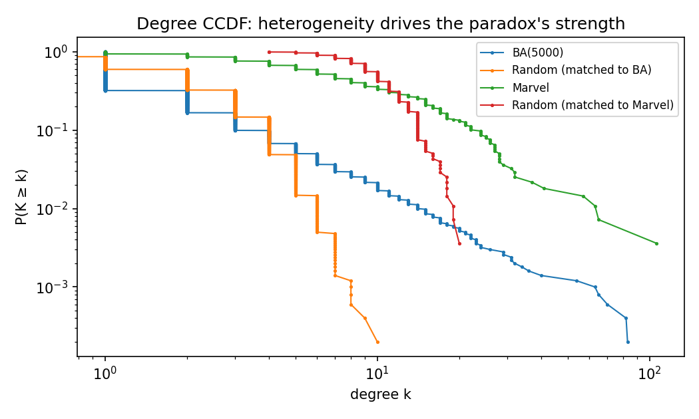
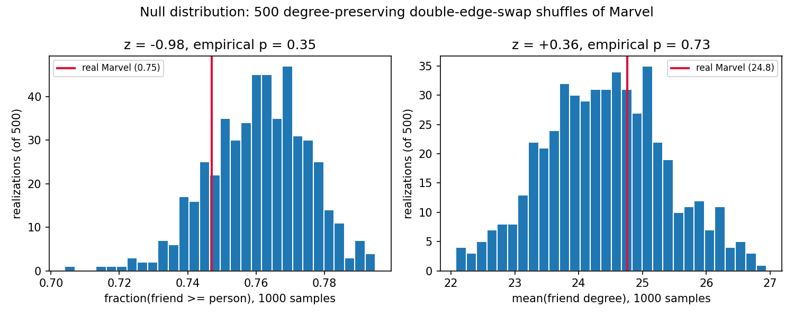

Ask any of the 277 connected characters in Wikipedia's Marvel superhero network how many friends their
friends have, on average, and the answer is almost always "more than I have." That's not a personality
flaw, it's arithmetic — and it's a clean illustration of a null-model idea from this week's toolkit: a
statistic that looks like a fact about this specific network turns out to be entirely explained by
its degree sequence.
The paradox and why it must exist
Compare two averages: the mean degree of a character picked uniformly at random (⟨k⟩), and the mean
degree of a random friend — reached by picking a random character, then a uniformly random one
of their links (⟨knn⟩). These aren't the same sampling process. Following a link samples a
node with probability proportional to its own degree, so hubs get over-represented among "friends"
relative to how often they get sampled as "the person." One line of algebra makes the gap exact:
⟨k_nn⟩ = ⟨k²⟩ / ⟨k⟩ = ⟨k⟩ + σ² / ⟨k⟩
The excess over ⟨k⟩ is exactly σ²/⟨k⟩ — the degree variance, rescaled. It is zero only when every node has
the same degree, small when degrees cluster near the mean (Erdős–Rényi), and large whenever a few hubs
stretch the tail (scale-free networks). So the paradox isn't really about "hubs" as a special ingredient;
it's about degree variance, full stop — hubs are just an efficient way to get a lot of it.
Does it hold in the Marvel network? Yes, and it's not close
We built the network from Wikipedia's Category:Marvel Comics superheroes (303 characters,
1,784 directed hyperlink edges), collapsed it to an undirected simple graph, and restricted to the largest
connected component — 277 characters, 1,421 edges — since "who's your friend's friend" only makes sense
within one connected piece. On that network: ⟨k⟩ = 10.26, σ² = 123.0, giving a formula-predicted
⟨knn⟩ = 22.25. Sampling 1,000 (person, random-friend) pairs directly (person uniform, friend
uniform among that person's links) gives a mean friend degree of 25.7 versus a mean person degree of 9.8,
and the friend is at least as connected as the person in 76% of draws.
To calibrate what "large" means here, we ran the identical procedure on three more networks: a 5,000-node
Barabási–Albert network (m=1, from exercise 2.5b), an Erdős–Rényi G(n,m) control matched to
it, and a second G(n,m) control matched to Marvel's own size (277 nodes, 1,421 edges).

Figure 1 — Degree CCDF, log-log. Marvel and BA(5000) both show visibly heavier tails than their size-matched random controls; the steeper and straighter the tail, the larger the σ² feeding the formula above.Figure 2 — Mean person vs. mean friend degree, 1,000 samples per network (bar labels: fraction of pairs where the friend is at least as connected). The random control matched to Marvel barely separates the two bars (fraction 0.60); Marvel itself separates them by a factor of ~2.6 (fraction 0.76); BA(5000) separates them by a factor of ~4.5 (fraction 0.81) despite average degree there being only 2. The paradox scales with tail weight, not with network size.
The random control is the honest baseline here, and it's telling: even with zero preferential
structure, a same-size Poisson-degree network still shows the friend ahead of the person 60% of
the time — the paradox never fully disappears, it just gets much smaller. Real Marvel and BA sit well
above that floor.
Who's actually driving it
Averages hide the story. For every character, we computed the fraction of their friends who are at least
as connected as they are — call it their "out-popularity'd rate."
Figure 3 — Distribution of the out-popularity'd rate across all 277 characters. Median character: about 5 out of 6 friends are at least as popular as they are. 116 characters (42%) are out-popularity'd by every single friend. Exactly one character — Spider-Man, degree 106, more than 40 links ahead of the #2 hub (Hulk, 65) — is never out-popularity'd: every one of his 106 neighbors has strictly lower degree than he does.
Spider-Man is the whole story in miniature: a single dominant hub is enough to make almost the entire rest
of the network "friends with someone more popular than them," without needing any of the other 276
characters to be unusual in any way.
Null model: is this about Marvel, or just about its degree sequence?
Here's the null-model question: does the paradox's strength depend on which characters link to
which (team affiliations, storyline clusters, editorial prominence), or purely on how many links each
character has? We generated 500 degree-preserving randomizations of the Marvel network
(nx.double_edge_swap, 10×edges swap attempts per realization, max_tries=100×edges,
seed 2026) — each shuffle keeps every character's degree exactly fixed while scrambling who they're
actually linked to — and reran the same 1,000-pair sampling on each.

Figure 4 — Null distributions from 500 degree-preserving shuffles, real Marvel marked in red. Left: fraction of pairs where friend ≥ person (real = 0.75, null mean = 0.76 ± 0.01, z = −0.98, empirical p = 0.35). Right: mean friend degree (real = 24.8, null mean = 24.4 ± 0.9, z = +0.36, empirical p = 0.73). Neither is remotely significant.
Real Marvel lands squarely inside both null distributions. This is the expected, slightly boring result,
and that's the finding: the edge-weighted formula ⟨knn⟩ = ⟨k⟩ + σ²/⟨k⟩ depends only on the
degree sequence by construction, so it cannot move under a degree-preserving shuffle — and here,
neither does the empirically sampled version. Whatever narrative structure actually connects these
characters (which team someone is on, which storyline they appear in) contributes nothing measurable
beyond what their degree already implies. To sanity-check the other end of the variance axis, we also ran
an 8-regular random graph on 277 nodes (σ² = 0 by construction): mean person and mean friend degree came
out identical, 8.00 = 8.00, confirming variance — not "hubs" as a category — is the necessary and
sufficient ingredient.
Grading an LLM's explanation
A typical LLM answer to "why do my friends have more friends than me" correctly identifies the sampling
mechanism (popular nodes get over-sampled as friends) but tends to overclaim two things: that it's
specifically about "hubs" rather than variance in general, and that it "disappears" in random networks.
Neither survives contact with the numbers above — the random control still shows the friend ahead 60% of
the time, and an 8-regular graph (no hubs, no variance) is the only network here where the effect is
actually zero.
The single best wrong sentence an LLM produced when we tried this: "the effect disappears in a random
network where there's no popular people to bias the sample" — random networks still have
mildly-more-popular-than-average nodes, and that alone is enough to keep the paradox alive, just weaker.
What we can't conclude
This is a Wikipedia hyperlink graph, not a social network — an edge means "the article for A links to the
article for B," which tracks narrative and editorial prominence more than friendship, so "degree" here is
closer to "narrative centrality" than "number of friends." We also discarded edge direction (reciprocity
is only 0.39 — many links are one-way) and dropped 17 isolated characters plus 9 small side-components to
get a single connected piece to sample from. And the null-model result, however clean, is a non-finding:
it says this particular test with 500 shuffles couldn't detect extra structure beyond the degree sequence,
not that no such structure exists anywhere in the network.
Conclusion
The friendship paradox holds hard in the Marvel network — driven almost entirely by one hub, Spider-Man —
and a 500-shuffle degree-preserving null model confirms it needs nothing more than the degree sequence to
appear: give any network this much variance in connections, real or shuffled, and everyone's friends end
up more popular than they are.